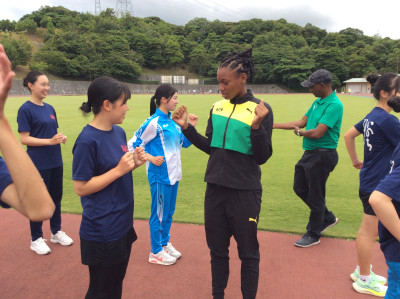
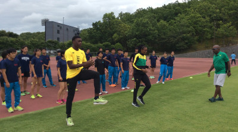
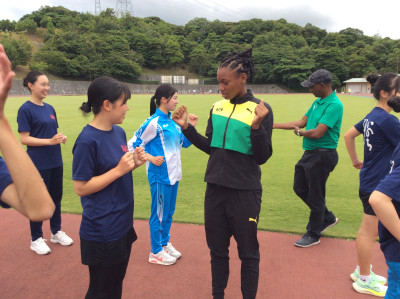
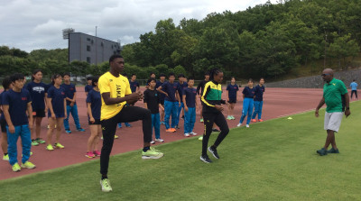
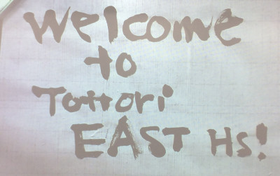
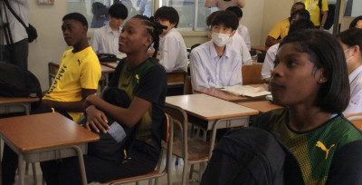
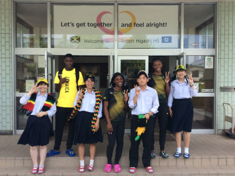
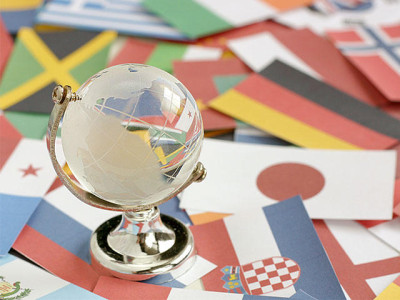
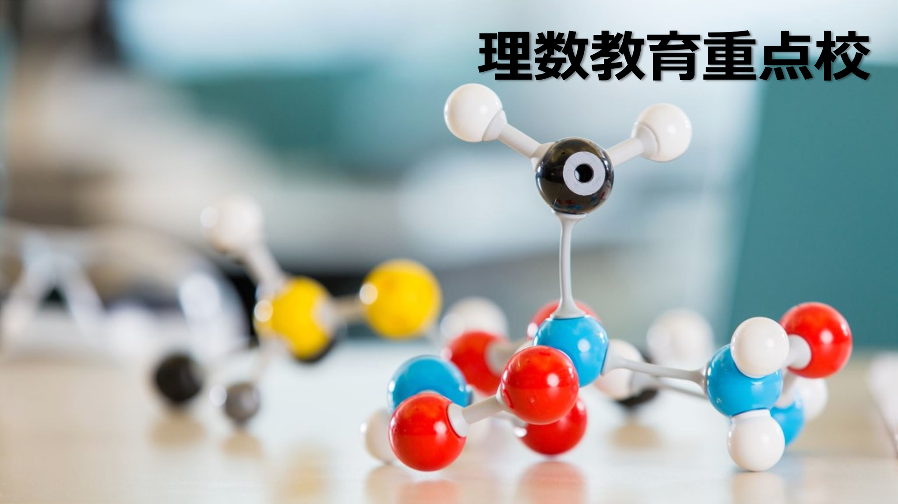

Let's get together and feel alright! ～ようこそ鳥取東高校へ！（４）～
2023年6月23日 21時07分放課後は…お待ちかねの陸上交流！
活動場所をやまたスポーツパーク陸上競技場（サブトラック）に移し，陸上競技部有志部員と一緒に陸上をとおして交流。効果的なウォームアップの方法やドリルの仕方について，アリアさんやシャクェインさんをモデルに，ジャマイカのトップ選手を指導するコーチから直接，指導していただきました。
 

放課後は…お待ちかねの陸上交流！
活動場所をやまたスポーツパーク陸上競技場（サブトラック）に移し，陸上競技部有志部員と一緒に陸上をとおして交流。効果的なウォームアップの方法やドリルの仕方について，アリアさんやシャクェインさんをモデルに，ジャマイカのトップ選手を指導するコーチから直接，指導していただきました。
 
２時間目は１年生書道。

１時間目の授業は，２年生英語コミュニケーションⅡ。

101回目の創立記念日を迎えた昼下がり。
素敵なゲストが鳥取東高校を訪問してくれました。
ジャマイカから来た３名の高校生です！

いつも本校HPをご覧くださりありがとうございます。
本日，鳥取東高校は創立101周年を迎えました。そこで本日の日課を始めるにあたり，初代校長 林 重浩氏そして校祖 徳田 平市氏の本校創設への情熱と故郷への想いを生徒・教職員が改めて全身で受け止め，本校で学ぶことの誇りと地域の皆様への感謝の思いを新たにしました。
R5_鳥取東高等学校_創立記念日（創立101周年）HP用.pdf
「こんなことに取り組んでみたい！」
鳥取東高は，生徒のこんな声に応じ，生徒の興味関心に応じた自主的な課外活動を応援しています。
このたび，そんな課外活動の一環として，令和５年８月６日（日）～７日（月）の２日間，東京都代々木で開催される第７回全国高校教育模擬国連大会に，本校生徒約20名が参加することになりました。

鳥取東高校は，鳥取県教育委員会から「理数教育重点校」の指定を受け，生徒にサイエンスマインドを育むとともに，物事に主体的に取り組める個性あふれる人材や将来の科学・技術を担う人材を育成しています。
生徒だけでなく教職員も大切にしているのは次の一言：行動から生まれる無限の可能性。
来る７月10日（月）。大学の先生から最先端の研究に基づくゼミ形式の講義を受け，生徒のサイエンスマインドをかきたて，科学的な見方・考え方をより広げる「サイエンスゼミ」を開催します。

緊急地震速報時に適切な対応がとれるよう、本日、朝のSHR前に教室内で防災訓練を実施しました。
第16回書道パフォーマンス甲子園予選において
本校書道部が中国ブロック第３位となりました！
これにより，７月23日に愛媛県で行われる本選への出場が決まりました。
２大会ぶり、９回目の全国大会出場になります。
書道部の皆さん、おめでとうございます！
全国大会での活躍を期待しています！
令和５年度鳥取県高等学校総合体育大会の結果
＜柔道部＞
男子個人６６ｋｇ級 澤田睦月 優勝
＜ボート部＞
女子舵手付きクオドルプル（谷口晴、原田優、毛利芭奈、中村沙希、池ノ内花江） 優勝
女子ダブルスカル（細谷和夏、前田明星） 優勝
＜ビームライフル部＞
BR男子団体（髙垣太空、山本凌大、西尾蓮汰） 優勝
BR女子団体（霜里風花、田中麗、馬淵深夕） 優勝
BP男子団体（山口慧、岡本歩、松本悟志） 優勝
代表：山口、髙垣、山本、霜里、西尾、田中、馬淵（７名）
以上の生徒の全国高校総体出場が決まりました。おめでとうございます。
令和５年度鳥取県高等学校総合文化祭の結果
＜邦楽部＞
鳥取県高校総合音楽会日本音楽部門 最優秀校
来年度の全国高総文祭への出場が決まりました。おめでとうございます。
なお、今年の高総文祭へは書道部・将棋同好会から１名ずつが参加します。
この他にもたくさんの入賞・中国大会等への出場の報告がありました。
参加した生徒のみなさん、また次の目標へ向かって頑張ってください‼